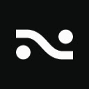
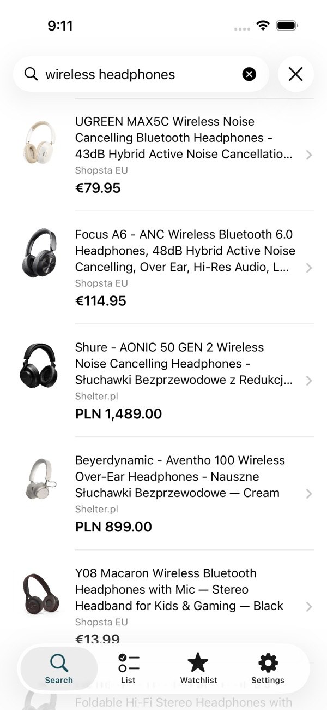
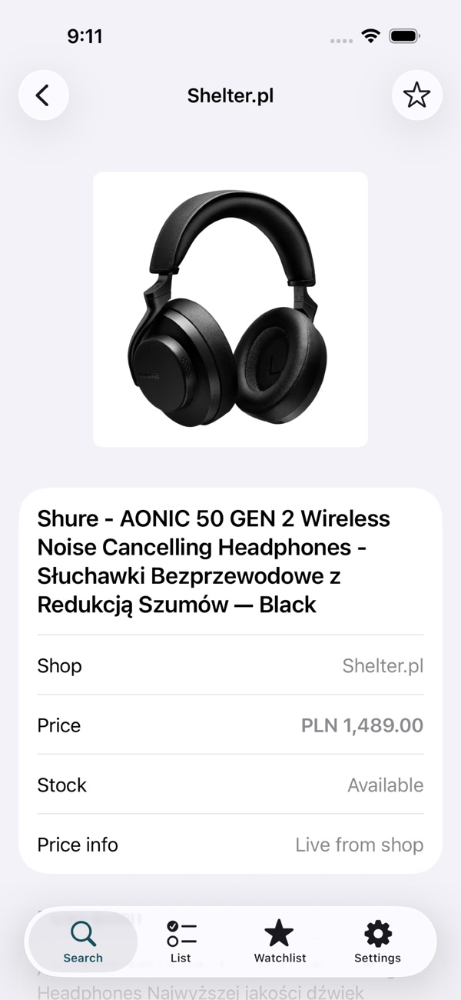
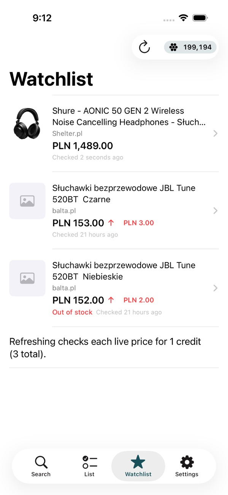
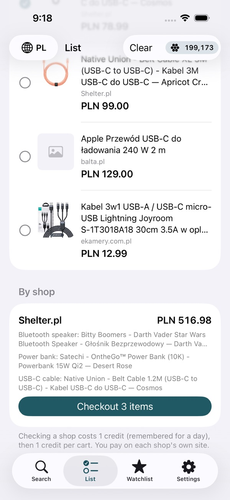

Free app · iPhone, Chrome and Firefox

ZUREQ ShopperSearch 13,000+ independent online shops in your own words. Check the live price and stock, then jump straight to the shop's checkout.
Needs iOS 17 or newer. In English and Polish. Sign in with a free ZUREQ account; the free plan includes 200 searches a month.

What it does
A shopping search for the shops that marketplaces leave out.
🔎 Search in your own words
Type what you need the way you would say it. Results come from 13,000+ independent shops on the ZUREQ network, not from one marketplace.
🌍 Pick your market
Search one country or the whole EU. Most shops today are in the US, Poland and Austria.
⚡ Live price and stock
Open a product and the app asks the shop for the current price, net price, stock and variants.
⭐ Watchlist
Star a product and refresh its price whenever you like. The list shows how the price moved since you added it.
🧾 Shopping list
Add several things to find, pick one offer for each and get checkout links grouped by shop.
🛒 Checkout at the shop
Buy opens the shop's own checkout in your browser. You pay the shop directly; the app never sees your card.
How it looks



Try it
No ads and no tracking in the app. Your watchlist, lists and history stay on your device. ZUREQ Shopper is an independent project built on the public ZUREQ API; it is not made by ZUREQ.